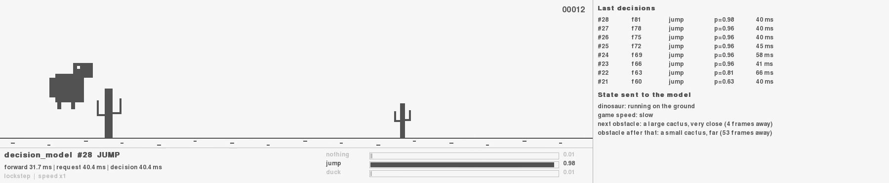
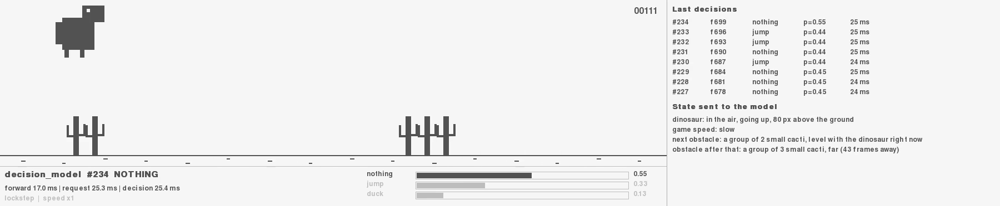

El nombre System One viene del Sistema 1 que popularizó Daniel Kahneman en Pensar rápido, pensar despacio: rápido e intuitivo, frente al Sistema 2, lento y deliberado.
✗ Mala pregunta: «Analiza el mensaje y decide qué hacer».
Origen del nombre y ejemplos de preguntas: documentación de TypeSafe («System One» y «Primitives»). Kahneman, Thinking, Fast and Slow (2011).
Septiembre de 2026
Dos semanas que crearon una categoría
1 · El pionero cerrado. Jev define la categoría y la API, pero no publica cómo está hecho.
2 · La respuesta abierta. En días aparecen alternativas con pesos y receta públicos: nuestra ventana al interior.
3 · La confirmación. OpenAI lanza su propia Decisions API: la idea va en serio.
Fechas aproximadas: publicación del blog de TypeSafe, creación de los repositorios de GitHub y Hugging Face, y DevDay de OpenAI.
Qué es
Un contrato muy simple
Estado
El contexto: un ticket, un pedido, un correo, la escena de un juego… En texto o JSON.
Preguntas
Tipo, instrucciones y las respuestas posibles. Las defines tú: el modelo no puede salirse de ellas.
Respuestas
La opción elegida, la probabilidad de cada opción y una confianza. Listo para usar en código.
Qué es · los tres tipos de pregunta
Choice, Score y Noul
Estado: "Help! My payouts have been failing for 3 days." Las tres preguntas viajan en la misma petición.
choice
Elegir una opción
«¿Qué equipo debe atenderlo?»
billing
0.87technical
0.13sales
0.00
Responde choice: "billing" y la probabilidad de cada opción.
score
Situar en una escala
«¿Cómo de frustrado está el cliente?»
Responde score: 1.04: puede caer entre niveles.
noul
Sí o no, con probabilidad
«¿Transmite urgencia?»
Responde noul: 0.95: la probabilidad de «sí».
Valores reales de la respuesta de jev-1.13.0 en la documentación pública del modelo (Cloudflare Workers AI). «Noul» es el nombre que TypeSafe da a las preguntas de sí/no.
Qué es · la API casi estándar
Una petición, todas las respuestas
Petición · POST /v1/systemone
{
"model": "jev-latest",
"state": "Help! My payouts have been failing for 3 days.",
"questions": {
"is_urgent": {
"type": "noul",
"instructions": "Does this convey urgency?"
},
"department": {
"type": "choice",
"instructions": "Which team should handle this?",
"criteria": {
"billing": "Payments, invoicing, refunds",
"technical": "Bugs, outages, integrations",
"sales": "Pricing, upgrades, new accounts"
}
},
"frustration": {
"type": "score",
"instructions": "How frustrated is the customer?",
"criteria": ["Calm", "Frustrated", "Very angry"]
}
}
}
Kev, Laya y CLM aceptan los mismos state y questions; cambian el nombre del modelo y, en algún despliegue, la ruta. OpenAI usa la misma idea con otros nombres de campo.
Ejemplo de la documentación pública de Jev en Cloudflare Workers AI (resumido: se omiten los criteria de la noul y el campo legend de la respuesta).
Por dentro · la diferencia clave
Generar palabra a palabra frente a decidir de una vez
Por dentro · la arquitectura común
Del texto a una decisión con probabilidades
Por dentro · leer una vez, preguntar muchas
Un estado, muchas preguntas en paralelo
1
vez se lee el estado
0
preguntas respondidas a la vez
Cada pregunta ve el estado y a sí misma, pero no ve las demás: no se contaminan entre sí.
Por eso conviene preguntar «de más» (speculative fan-out) y que tu código use solo lo que necesite.
TypeSafe documenta 13 preguntas en una llamada: 12,2 veces más barato y 10 veces más rápido que una llamada por pregunta. Respuestas ilustrativas, salvo urgencia, equipo y frustración (ejemplo de Jev).
Por dentro · lo que enseñan los modelos abiertos
Una idea, tres formas de construirla
Kev
LLM congelado + adaptador
Un LLM Qwen (0.8B–27B) se queda tal cual. Se le añade un pequeño adaptador (LoRA) y un cabezal que compara la pregunta con cada opción.
Laya
Encoder compacto
Un modelo tipo BERT (~0,3–0,4B) lee estado y pregunta a la vez, en ambas direcciones. Un cabezal por tipo de pregunta. ~33 ms.
CLM
Contrastivo
Estado y opciones se convierten en puntos de un mismo espacio. Gana la opción más cercana al estado. Las opciones se pueden precalcular.
Jev · OpenAI
Caja negra
Suponemos algo parecido: un modelo base grande, post-entrenado para decidir y calibrado. No han publicado arquitectura ni tamaño.
Denominador común: un modelo de lenguaje preentrenado hace de lector y un cabezal pequeño puntúa las opciones en lugar de generar texto.
Cómo se entrena
La receta, en tres pasos
01
Aprender a leer
Se parte de un modelo de lenguaje ya preentrenado con enormes cantidades de texto. Ya entiende el idioma y sabe cosas del mundo.
Kev y CLM: Qwen · Laya: ModernBERT y mmBERT · Jev y OpenAI: no publicado (OpenAI dice usar GPT-6 Luna).
02
Aprender a decidir
Se le enseñan miles o millones de ejemplos de (estado, pregunta, respuesta correcta) procedentes de datasets públicos y datos sintéticos.
Kev: ~12.600 ejemplos · CLM: ~60 M + 30 M + 1 M en tres fases · Jev: datos 100 % sintéticos, según una entrevista a su creador.
03
Aprender a ser honesto
Se ajusta para que sus probabilidades digan la verdad: si dice 80 %, que acierte el 80 % de las veces.
Jev y Laya: RLCD (refuerzo con reglas de puntuación «propias») · Kev: temperature scaling sobre datos reservados.
Cómo se entrena · qué se premia
Tres formas de post-entrenar un modelo
RLHF
RLVR
RLCD
Se premia…
que la respuesta le guste a una persona
que la respuesta sea verificablemente correcta
que la probabilidad declarada coincida con la realidad
Produce
Chatbots (InstructGPT, ChatGPT)
Modelos de razonamiento
Modelos de decisión
Efecto secundario
Sicofancia y exceso de confianza: sonar seguro puntúa mejor
Lentos y caros: razonan antes de responder
No generan texto: solo deciden
Analogía
El alumno que dice lo que el profesor quiere oír
El alumno que resuelve el problema paso a paso
El hombre del tiempo cuyos «70 %» llueven 7 de cada 10 veces
RLCD (Reinforcement Learning for Calibrated Decisions): el nombre lo puso TypeSafe con Jev. Su receta exacta no es pública; Laya publica una versión abierta.
Fuentes: «AI primer» de TypeSafe y README de Laya (recompensas con proper scoring rules y policy gradient al estilo GRPO).
Calibración · el truco matemático
La apuesta honesta
Eres el hombre del tiempo y sabes que mañana llueve con una probabilidad real del 70 %. Te penalizan con la regla de Brier:
si llueve: (1 − p)²
si no llueve: p²
Prob. real
Lo que dices
Penalización media: 0.300(mínimo posible: 0.210)
Con una regla estrictamente propia, la penalización solo es mínima diciendo la verdad. Si el modelo se entrena así, mentir nunca le compensa.
Calibración · el ajuste fino
El termostato de la confianza
billing
0technical
0sales
0
Temperatura
El modelo puntúa las opciones y una función (softmax) convierte esas puntuaciones en probabilidades.
Dividir las puntuaciones entre una temperatura T > 1 las suaviza: el modelo deja de estar «demasiado seguro».
El orden no cambia: no cambia qué opción gana, solo cuánta seguridad expresa.
Cada modelo de Kev trae su temperatura, ajustada con datos reservados (entre 1,32 y 2,41).
Puntuaciones ilustrativas. Temperaturas según el README de Kev.
Calibración · cómo se mide
Si dice 80 %, acierta el 80 %
Se agrupan miles de respuestas según la confianza declarada y se mira cuántas acertaron en cada grupo.
Un modelo calibrado cae sobre la diagonal. La distancia media a ella es el ECE (Expected Calibration Error).
DATOS PUBLICADOS · CALIBRACIÓN ANTES → DESPUÉS
Kev-9B
ECE 0,103 → 0,041
Errores con p ≥ 0,9: 8,2 % → 2,4 % · Jev: 3,7 %
Laya typed
ECE 0,213 → 0,081
Ojo: la calibración es una propiedad de grupos de respuestas. No garantiza que una respuesta concreta sea correcta.
Gráfico con datos ilustrativos (sintéticos). Cifras de la tabla: READMEs de Kev (fuentes no vistas en el entrenamiento) y de Laya.
Calibración · de probabilidades a confianza
Un número para decidir si actuar
billing
technical
sales
Confianza
0.70
confianza = (p_max − 1/n) / (1 − 1/n)
Es 1 si toda la probabilidad está en una opción y 0 si está repartida por igual. Así el modelo puede decir «no estoy seguro».
Fórmula de TypeSafe para preguntas choice. Para noul se puede usar |2p − 1|. Los umbrales del recuadro son ilustrativos.
Ventajas · frente a un LLM
¿Por qué no usar un LLM y pedirle JSON?
LLM con JSON mode
Modelo de decisión
Salida
Texto con forma de JSON: hay que validarlo
Un valor del conjunto que tú defines: imposible salirse
Probabilidades
No expuestas o poco fiables; tiende a sonar seguro
Calibradas, en cada respuesta y para cada opción
Repetibilidad
Muestreo aleatorio: la misma pregunta puede variar
Sin muestreo: misma entrada, mismas probabilidades*
Velocidad
De uno a varios segundos
Decenas a cientos de ms (Jev: 70–500 ms; OpenAI: ~150 ms frente a ~1,6 s)
Coste
Pagas la entrada y cada token generado
Casi todo es entrada (Jev: la salida es gratis)
Varias preguntas
Una tras otra, o mezcladas en un mismo prompt
En paralelo y aisladas, sobre una sola lectura del estado
* Salvo pequeñas variaciones numéricas (por ejemplo, en bf16) o un cambio de versión detrás de un alias como jev-latest. Latencias según TypeSafe y la prensa de DevDay 2026.
Ventajas · frente a un clasificador clásico
Lo mejor de los dos mundos
Clasificador clásico
Un modelo por tarea: recoger datos, etiquetar, entrenar y desplegar
¿Una categoría nueva? Volver a entrenar
Rápido y barato, pero no generaliza fuera de su tarea
Modelo de decisión
Un modelo para muchas tareas: la pregunta y las opciones van en la petición
¿Una categoría nueva? Se añade una línea al JSON
Generaliza a tareas que no ha visto (zero-shot)
Los abiertos son menos potentes, pero se pueden afinar con tus datos
LLM
Lo hace casi todo, sin entrenar
Más lento y caro, y sin probabilidades fiables
Afinar compensa. Con 5.219 reclamaciones reales etiquetadas, una pasada de entrenamiento llevó a Kev-4B del 0,804 al 0,904 de acierto. Un ajuste de ejemplo tarda unos 15 minutos en una GPU H100, según su autor.
Jev no se afina: los mismos pesos sirven a todos los clientes. Se adapta a tu caso con el estado, las instrucciones y los criterios de cada pregunta.
En la práctica · el patrón estrella
La confianza decide el camino
El umbral depende del riesgo: mostrar un saldo no es lo mismo que aprobar una transferencia. Ese criterio lo pone tu código, no el modelo.
Un ejemplo vivo
Un modelo de decisión jugando al dinosaurio de Chrome
A cada momento se describe la escena en texto y se pregunta: choice entre jump, duck y nothing.
Kev-9BSeguro de sí mismo

Kev-0.8BDudando… y diciéndolo

Capturas de una demo interna con modelos Kev servidos en remoto (2 de octubre de 2026), sin entrenar para este juego.
El mapa
Quién es quién
Modelo
Quién
Acceso
Por dentro
Calibración
¿Afinable?
Jev
TypeSafe
API de pago
No publicado
RLCD
No (estado e instrucciones)
Kev
Open source · jaredpalmer/kev
Abierto · Apache-2.0
Qwen congelado + LoRA + pointer head · 0.8B–27B
Temperatura ajustada
Sí
Laya
Open source · NandhaKishorM/laya
Abierto · Apache-2.0
Encoder ModernBERT o mmBERT · ~0,3–0,4B
RLCD + temperatura
Sí
CLM
Open source · Contrastive-LM
Abierto · Apache-2.0
Qwen3-8B congelado + 2 proyecciones (InfoNCE)
Contrastiva
Sí (cabezales)
Decisions API
OpenAI
API · preview limitada
Versión especializada de GPT-6 Luna
No publicado
No anunciado
Según la documentación de cada proyecto, consultada el 2 de octubre de 2026. Las cifras de rendimiento no son comparables entre sí: cada uno se evalúa con sus propios benchmarks.
En la práctica
Cuándo usarlos y cuándo no
✓ Encajan bien
Clasificar y enrutar tickets, correos y casos
Triaje y priorización
Guardrails a la entrada y salida de un LLM
Elegir el siguiente paso o la herramienta de un agente
Comprobar si un documento dice algo
✗ No son para esto
Redactar, resumir o explicar
Razonar en muchos pasos
Preguntas abiertas o mal acotadas
Decisiones críticas sin supervisión humana
⚠ Con cuidado
El orden de las opciones puede influir
Rinden mejor en inglés
Contextos muy largos o muchas opciones
Mide con tus datos antes de fijar umbrales
Pista: si una persona experta lo decidiría en un segundo con la información delante, es buen candidato. Si tendría que pensarlo un rato, divide la pregunta o usa un LLM.
En la práctica · patrones de uso
Cómo se combinan con el resto del sistema
01 Fan-out especulativo
Hacer de golpe todas las preguntas que podrían hacer falta. Cuesta casi lo mismo que hacer una.
02 Enrutado por confianza
La respuesta dice qué; la confianza, si actuar: automatizar, confirmar o escalar.
03 Puntuación compuesta
Partir un juicio complejo en preguntas atómicas y combinarlas en código con los pesos que tú controlas.
04 Cascada Sistema 1 → Sistema 2
El modelo de decisión resuelve lo fácil y rápido; lo dudoso pasa a un LLM razonador o a una persona.
Regla de oro: el código manda. El modelo aporta sentido común en puntos concretos; el flujo, las reglas y los permisos siguen en el software.
Para llevarse
Tres ideas
1
No escriben, deciden. Leen como un LLM, pero responden eligiendo entre opciones que tú defines, en una sola pasada.
2
Dicen cuánto saben. Sus probabilidades están entrenadas para ser honestas, y eso permite automatizar con umbrales.
3
Entre el clasificador y el LLM. Generalizan sin entrenar para cada caso y, en abierto, se pueden afinar al tuyo.